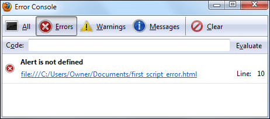

Error Checking and Debugging
There's no doubt that Javascript can be a fiddly, messy language to get to grips with. Unfortunately, there's no easy way to see where you went wrong without some form of debugging software or plug-in. Even then, the error messages these generate can be somewhat enigmatic.
The debugger we like is the Web Developer toolbar by Chris Pederick. It's a Firefox extension. You can get it here:
Once installed, you'll see a toolbar like this one:
As you can see, there's lots of options for budding web developers.
For the Javascript part, have a look on the right of the toolbar and you'll see three green ticks (hopefully):
This indicates that all is well with the page. If you see a red X on the right it means there's an error or warning for your Javascript:
When you click the red X you'll see a console pop up. The console will tell you some information about the error:

Although the message itself can be puzzling if you're a beginner, it at least tells you which line the error is on.
You can also type something in the Code text box and click the evaluate button:
If there's an error you'll then see this:
If you want to try this, type a lowercase "a" and click evaluate again. You'll see a message box appear. The code has run successfully.
Another popular Javascript debugger is Firebug. Again, this is for Firefox. It can be a bit daunting for beginners, but is well worth trying. The Firebug home page is here: http://getfirebug.com/
Internet Explorer 9 has a sophisticated Jscript debugger built into it. (Jscript
is Microsoft's version of Javascript. It's mostly the same, though.) The debugger
is tricky to find, though. First, press the left ALT key on your keyboard to
see the File, Edit, View menu at the top. Now click Tools > Internet Options.
From the Internet Options dialogue box click the Advanced tab. Scroll
down and find the entry for Disable Script Debugging. Uncheck this entry
if it has a check mark next to it. Click the Apply button at the bottom
of Internet Options. Reload your web page and you'll see a message at the bottom
about ActiveX controls. Say yes to this, and yes on the Web Page Error dialogue
box. After all that, you should see the following:
The debugger is not the easiest thing in the world to understand, but at least you get a nice yellow background and pointer for your errors!
In the next section, you'll write your very first piece of Javascript.